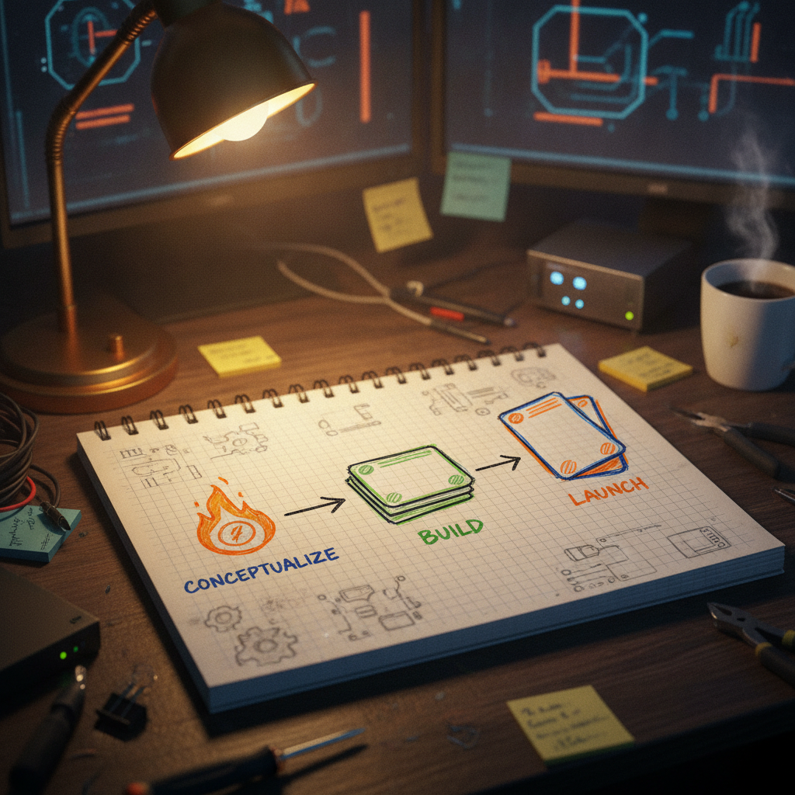

A Closer Look at God Loves BEPE, a New Chia NFT Drop Built Around Burns
I stopped scrolling on this one because of the name alone. Faith and memes do not usually share a sentence, and seeing them stacked next to BEPE made me want to know what was actually being built underneath the joke.
What was bookmarked
@icelabs0 posted the launch of God Loves BEPE, a Chia NFT collection of 470 unique pieces. The post says the drop involves real BEPE and ICE burns and describes it as built for the Chia community. It links out to the collection page on MintGarden, where the full set can be viewed and minted.

Why it matters
Chia's NFT scene has always been smaller and quieter than the big chains, which means the projects that show up tend to come from people who are actually in the ecosystem rather than chasing a trend. A collection that ties itself to token burns is worth a look because it is trying to do something with the mint beyond just selling art. Burn mechanics, when they are real and verifiable, give a collection a reason to exist past the initial hype window. That is the kind of thing that matters more in a community-sized ecosystem like Chia than it would somewhere with infinite liquidity chasing every drop.
The practical breakdown
What it does: Mints a fixed set of 470 collectibles on Chia, with the post stating that BEPE and ICE tokens are burned as part of the process.
Who it helps: Collectors already holding BEPE or ICE who want a use case beyond holding, and Chia NFT creators watching for new formats that combine memes with tokenomics.
What problem it solves: A lot of meme-adjacent NFT drops are pure image sets with no connection to anything else. Tying the mint to a burn at least gives it a mechanical link to existing tokens instead of floating on its own.
What still needs work: The post does not spell out the exact burn ratio, how burns are verified on-chain, or what happens after the 470 pieces are gone. Anyone interested should check the MintGarden page and any pinned details before assuming specifics.
What I would test first: Pull up the collection on MintGarden and look at the on-chain burn transactions directly if they are referenced. Chia's explorer tools make that pretty easy to confirm rather than take on faith.
Where this could go next: If the burn mechanic is real and consistent, this could become a small template other Chia meme projects borrow from, pairing a fixed NFT set with a deflationary token action instead of just flipping jpegs.
Rick's take
I like seeing this kind of thing come out of the Chia NFT corner because it is exactly the kind of small, weird, community-built project that makes this ecosystem fun to watch. Mixing faith imagery with a meme coin and tying it to real burns is a genuinely creative move, and 470 pieces keeps it feeling like a real collection rather than an open-ended cash grab. The one thing I would want spelled out more clearly is the actual burn math, how much BEPE and ICE gets burned per mint and how that is tracked on-chain, but that is a detail I would just go verify on MintGarden rather than a reason to hold back. Chia's NFT space thrives on people trying things like this.
What to watch next
Worth watching whether the mint sells through, whether the burns show up cleanly on-chain, and whether @icelabs0 or others follow up with more detail on the mechanics. If the burn side holds up, it is a nice small proof point for what Chia-native meme projects can do beyond just art.
Source and links
Source: X post by @icelabs0, https://x.com/i/web/status/2076428853203861604, retrieved on 2026-07-12.
External references: God Loves BEPE collection on MintGarden, https://mintgarden.io/collections/god--loves-bepe-col10xkqv3vdqu6z870q7jp4526qynmp57a622cz38jv5wss2zxamwtsga0tdc